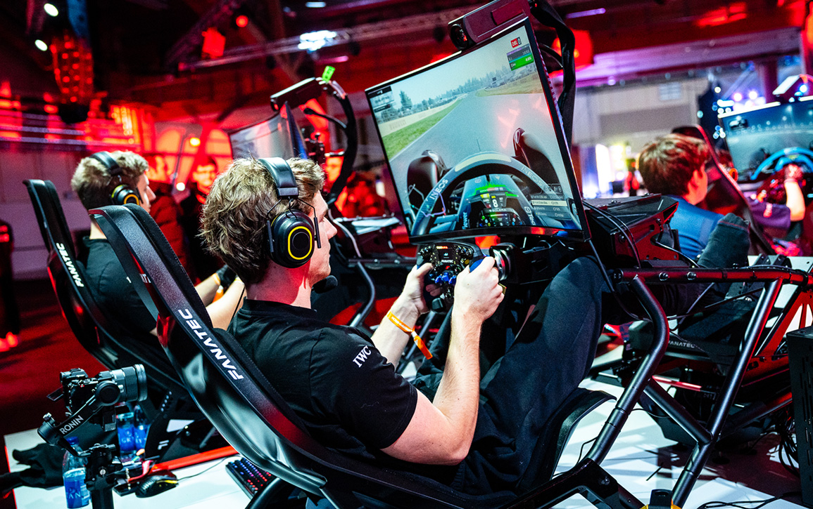
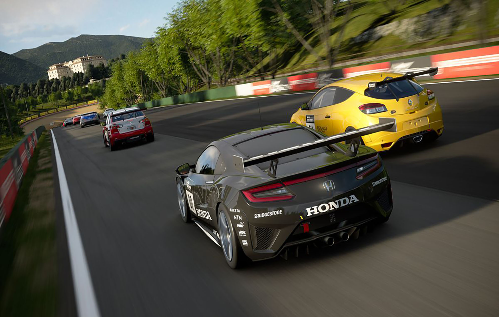
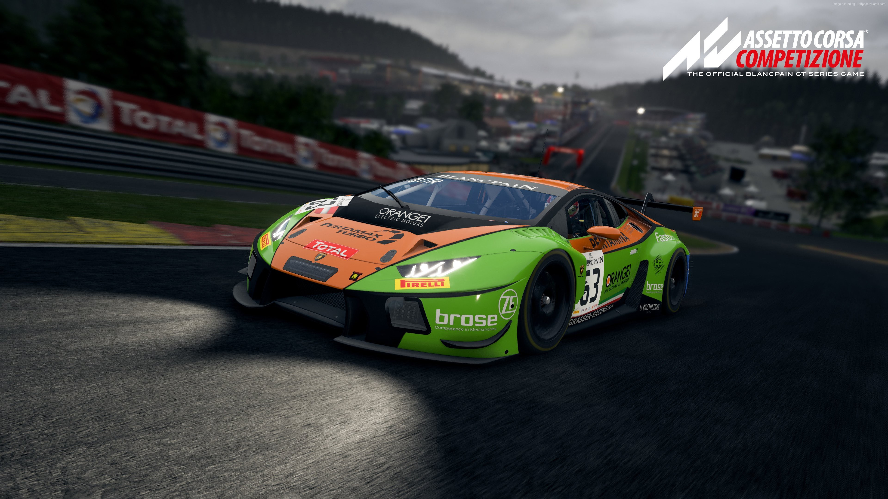

Racing Simulation Games

Popular Racing Simulation Games

Forza Horizon 5
Forza Horizon 5 is an open-world racing game set in a fictional
version of Mexico, offering a vast and diverse landscape to
explore. With dynamic weather, seasonal changes, and hundreds of
cars to collect and customize, it provides a thrilling and
immersive experience. Players can race, explore, and complete
various challenges in a vibrant world, making it appealing to both
casual players and racing enthusiasts.
Game Mechanics:
Forza Horizon 5 blends realism with an adventurous open-world
experience. Players drive through a wide range of landscapes
including jungles, deserts, and cities, all affected by dynamic
weather and seasonal changes. The game features hundreds of cars
to collect, upgrade, and paint, with each handling slightly
differently based on its class and build. Players earn skill
points by drifting, jumping, and pulling off stunts, while also
leveling up through events like street races and off-road
trails. Its forgiving handling system makes it great for
beginners, yet still enjoyable for experienced racers.
Game Tournaments:
The game supports competitive play through the Forza Racing Championship—a global tournament series featuring time trials and head-to-head races. In addition, players can join weekly online events, ranked races, and community-organized competitions that offer leaderboards, live streams, and prizes.

Gran Turismo 7
Gran Turismo 7 blends realistic racing simulation with the art of
car collecting and tuning. Players can enjoy a wide variety of
cars, each customizable for optimal performance, and take part in
various racing events. The game also offers a rich car history,
photo mode, and garage features, providing a well-rounded
experience for both racing and car enthusiasts.
Game Mechanics:
Gran Turismo 7 blends realistic driving with a deep appreciation
for car culture. The physics engine simulates tire wear, fuel
usage, and how different surfaces or weather affect grip.
Players begin by earning licenses through racing challenges that
also teach proper driving skills. With in-depth car tuning,
users can adjust everything from suspension and gear ratios to
downforce and tire type. The game also offers a photo mode,
museum, and detailed garage, letting players appreciate vehicles
from both a technical and historical perspective. Online racing
is competitive, with sport mode rankings that track both speed
and sportsmanship.
Game Tournaments:
The flagship tournament is the Gran Turismo World Series, which includes regional qualifiers and international finals. Endorsed by the FIA (Fédération Internationale de l'Automobile), this prestigious event brings together top players from around the world to compete in live, broadcasted races with real-world championship stakes.

Asseto Corsa
Assetto Corsa is a hardcore racing simulator known for its
realistic physics and attention to detail. It features highly
accurate tire models, suspension dynamics, and laser-scanned
tracks, offering players an authentic driving experience. With
support for mods and advanced customization, it appeals to both
professional sim racers and those looking to fine-tune their
racing setups.
Game Mechanics:
Assetto Corsa is known for its highly realistic physics and
track accuracy. The game simulates how real cars behave—down to
the details of tire grip, suspension movement, and brake
pressure. Its tracks are laser-scanned to match real-world
circuits precisely, making even small bumps and curves matter.
Players can modify settings like tire pressure, fuel load, and
gear ratios to fine-tune performance. It supports professional
gear setups including steering wheels, VR, and multi-screen
views. Assetto Corsa also has a strong modding community,
allowing players to add cars, tracks, and graphics updates.
Game Tournaments:
Assetto Corsa tournaments offer a competitive platform for sim racing enthusiasts. These tournaments range from casual community events to professional esports competitions with significant prize pools. They often feature various car classes and tracks, testing drivers' skills in different scenarios. Platforms like Grid Finder, The SimGrid, and World Sim Series host numerous Assetto Corsa tournaments, catering to different skill levels and preferences.